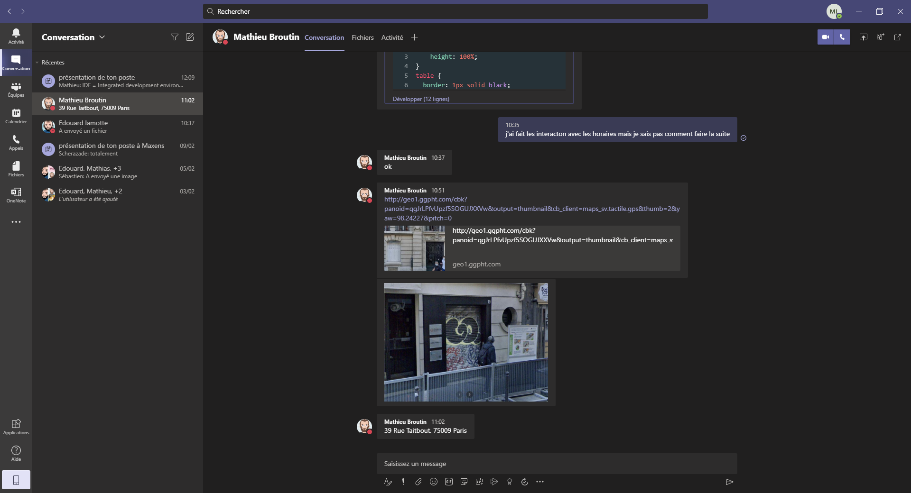

J'ai commencé ma journée avec une réunion teams avec mon maitre de stage durant laquel il m'a dit de continué les vidéos de fomations au langage html et de le prevenir dès que j'ai fini puis il est parti à son Daily que j'ai éxpliquélors de la présentation de ma premère journée de stage
Mon maitre de stage est parti à son Daily et j'ai regardé les vidéos de formation puis mon maitre de stage m'a dit de préparer des questions à poser au personnel lors de mes entrevue avec eux en visio-conference car il travaille tous chez eux à cause de la Covid.J'ai donc décidé de préparer mes questions 11h30.
De 11h00 a 11h30 j'ai porsuivi les vidéos et à partir de 11h30 j'ai préparer des questions pour tout les métiers que j'allais rencontré lors de mes entrevues en me référant à l'une de mes euilles de stage et ai pris ma pause dejeuner à 12h30
J'ai eu rendez-vous avec Scherazade Berbar la RRH, responsable des ressources humaines, et ai découvert son métier qui était je trouve très compliqué à comprendre,de ce que j'ai compris de son métier elle est responsable paye c'est à dire que c'est elle qui gére les paye des employés et qui regarde le nombre dejour qu'ils ont travaillez afin de savoir combien il faut les payés,c'est elle qui regarde si il y a des primes et donc c'est elle qui fait les comptes pour les salaires grâce à un outil informatique appelé le BP. C'est aussi elle qui fait les comtes lorsqu'un emplyé est régi et donc qui gère le nombre de jour durant lesquels il a trvaill´pour le client.
À cette heure j'ai fini mon entrtien avec Scherazade et quelque minute plus tard j'aiaussi fini les vidéos de formation au langage html et Mon Maitre de stage m'a donné un nouvel objectif qui m'aidera pour la réalisation de mon rapport de stage.Je dois effectué un tableau avec du langage html et lorsque jeclique sur une heure dans u jour sur le tableau je suis censé basculer sur une page qui résume cette journée et sur laquelle j'ai cliqué devra ressortir afin de la repérer et de pouvoir lire ce sur quoi on a cliqué et cela devrai falicité la lecture du lecteur.
Je fini cette deuxième journée de stage avec un objectif pour finir ma semaine et pour m'aider à réaliser mon rapport de stage.
Revenir à l'emploi du temps